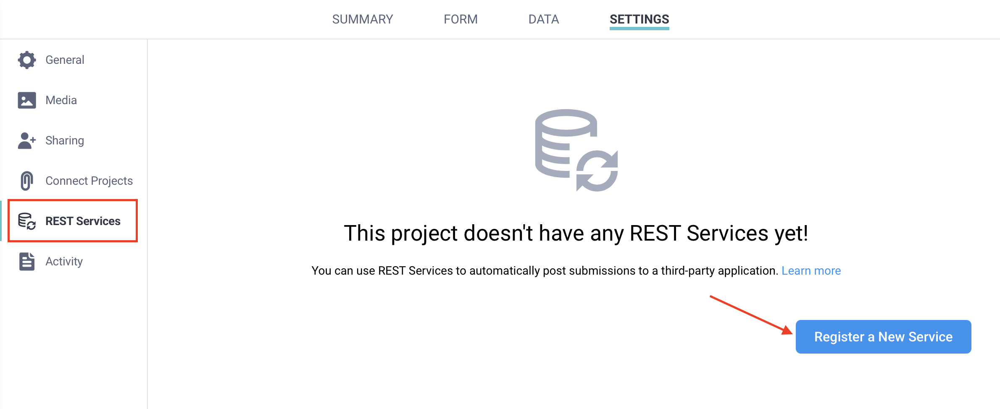

Search the knowledge base, browse our resources, and visit our Community Forum for more detailed information
Last updated: 19 Nov 2026
KoboToolbox REST Services allow you to automatically send new project submissions to external applications or servers. This can help integrate KoboToolbox with other systems, automate workflows, and reduce manual data transfers.
REST Services can also be useful for creating raw data backups on an external server, where submitted data remains stored even if the original submissions are edited or deleted from KoboToolbox.
REST Services send submissions to a web address, called an endpoint URL, provided by the receiving application. You can choose which fields to send, configure authentication, and customize the format of the data.
This article covers creating and configuring REST Services, understanding the available settings, and managing submission delivery.
REST Services use webhooks to automatically send data from KoboToolbox to external systems. A webhook is a connection that sends information to a specified URL when an event occurs.
Unlike the KoboToolbox Application Programming Interface (API), which allows external applications to request data from KoboToolbox, REST Services automatically send data to an external application when a new submission is received.
When a new submission is received in KoboToolbox, the configured REST Service sends the submission data to the receiving application’s endpoint URL using an HTTP POST request.
REST Services support:
JSON and XML formats: Choose the format required by the receiving application.
Authentication: Configure credentials or custom HTTP headers to authorize requests.
Field selection: Send all submission fields or only selected fields.
Custom wrappers: Customize the structure of JSON data sent to the receiving application.
Error notifications and retries: Receive notifications about failed requests and automatically retry certain unsuccessful deliveries.
Note: REST Services only send data when a new submission is created. Changes to existing submissions, including edits and deletions, are not automatically sent to the receiving application.
Before creating a REST Service, you need an endpoint URL from the application or server that will receive your KoboToolbox submissions. Depending on the receiving application, you may also need authentication credentials and information about the required data format.
To create a REST Service:
Open your KoboToolbox project.
Go to SETTINGS > REST Services.
Click Register a New Service.
Configure the service using the settings described below.
Click Create to save the service.

The REST Service configuration window contains several fields that determine how submissions are sent to the receiving application.
Field |
Description |
|---|---|
Name |
Enter a descriptive name to identify the REST Service within your KoboToolbox project. The name is for your reference and does not affect the data sent to the external application. |
Endpoint URL |
Enter the web address where KoboToolbox should send new submissions. This URL must be provided by the receiving application or the administrator of the external server. Use an HTTPS endpoint to protect data during transmission. |
Enabled |
Select Enabled to activate the REST Service and allow KoboToolbox to send new submissions to the configured endpoint. You can disable the service to stop sending new submissions without deleting its configuration. |
Receive email notifications |
Enable this option to receive email notifications when submission delivery fails. This can help you identify connection problems or errors with the receiving application. |
Type |
Choose the format used to send submission data:
Select the format supported by the receiving application. If you are unsure, check the application’s integration documentation. |
Security |
Choose the authentication method required by the receiving application.
If you select Basic Authentication, enter the credentials provided by the receiving application in the corresponding fields. |
Select fields subset |
Limit which fields are included. By default, REST Services send all available submission data to the receiving application. Enter the question names of the fields you want to include, and press Enter or Tab to add each field. For questions inside groups, use their full field names, including the group path where applicable. |
Custom HTTP Headers |
Some external applications require additional information in the HTTP request headers to authenticate requests or identify the integration. Enter the required header name in the Name field. Enter the corresponding value in the Value field. Click Add header to include additional headers if needed. Follow the instructions provided by the receiving application. |
Add custom wrapper around JSON submission |
Customize the structure of the data sent to the receiving application when using the JSON format, if the receiving application requires submission data to be placed inside a specific JSON structure. For example: The If the receiving application does not require a specific JSON structure, you can leave this option unconfigured. |
Note: REST Services do not automatically send existing submissions when a new service is created. Only submissions received after the service is enabled are sent through the connection.
After creating a REST Service, it appears in the list of registered services under SETTINGS > REST Services.
You can review its configuration and manage the service as needed.
You can disable an existing REST Service to temporarily stop sending new submissions to the receiving application.
When the service is enabled again, KoboToolbox resumes sending new submissions.
Disabling and re-enabling a service does not automatically send submissions that were received while it was disabled.
If the receiving application’s endpoint URL, authentication credentials, or data requirements change, update the REST Service configuration.
You can also delete a REST Service when the connection is no longer needed. Removing a REST Service stops future submissions from being sent through that connection. It does not delete submissions already sent to the receiving application.
If KoboToolbox cannot deliver a submission to the external server, it automatically retries the request only when the server returns one of the following errors:
HTTP 502 (Bad Gateway)
HTTP 503 (Service Unavailable)
HTTP 504 (Gateway Timeout)
KoboToolbox makes up to three automatic retry attempts, after approximately 50, 10, and 20 minutes.
For all other errors, automatic retries are not performed, and you must retry the failed request manually.
You can enable Receive email notifications in the REST Service settings to receive notifications about failed deliveries.
If submissions are not reaching the receiving application:
Check the endpoint URL, authentication settings, and required data format.
Confirm that the external server is available and configured to accept incoming requests.
Did you find what you were looking for? Was the information clear? Was anything missing?
Share your feedback to help us improve this article!